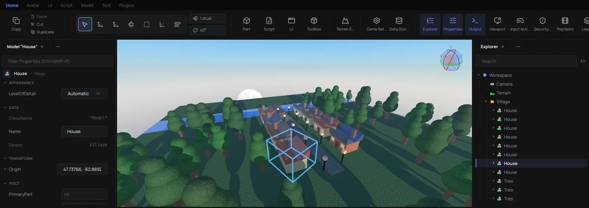
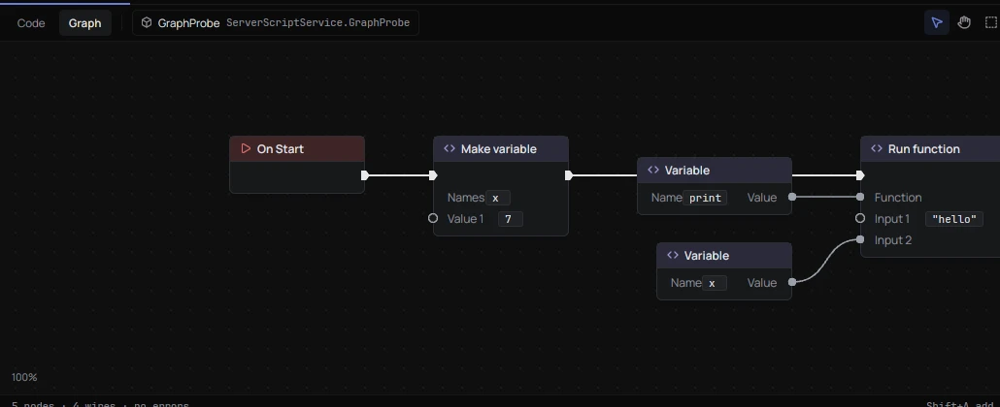
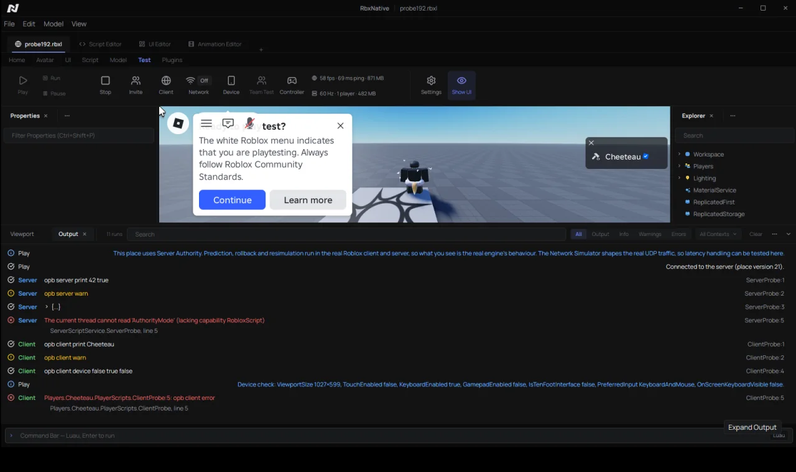
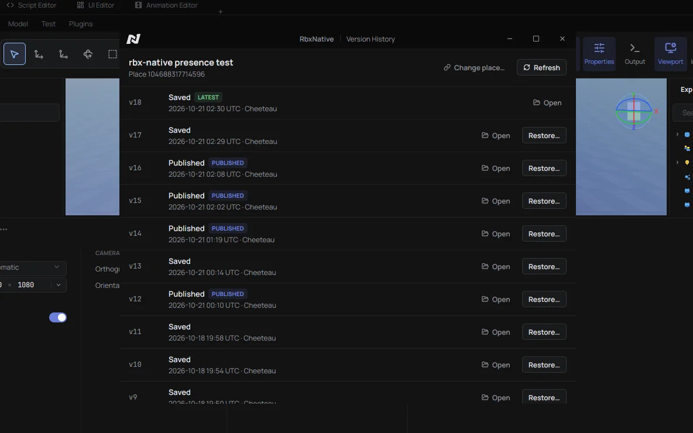

Files
Files
Opens and saves real places and models, binary and XML.
No Wine, no VM, it's a real native app written from scratch in Rust.
It's pre-alpha. It opens real places and you can build, script, animate and playtest in it, but plenty is still missing or approximated, so expect bugs.
Download for Linux Read the docs
v0.1.0, unpack it and run rbxstudio. macOS and Windows releases are upcoming, Linux goes first.

Opens and saves real places and models, binary and XML.
Explorer, Properties, the ribbon, gizmos, docks you can drag around.
Script editor with luau-lsp (autocomplete, hover, go to definition, diagnostics), StyLua formatting and a debugger with breakpoints.
The same script as nodes. The Luau source stays the real thing.

Command Bar, Output, Script Analysis.
Animation Editor with joint gizmos.
UI Editor, and it can import from Figma.
Smooth terrain.
Most community plugins run. F3X and Archimedes both work.
Through Sober or Roséline, embedded in the editor.

Publish, version history, DataStores and game settings through Open Cloud.

Real Team Create isn't happening, that part belongs to Roblox. What exists instead is a Studio plugin that talks to RbxNative through a relay.
Each side sees the other's camera, selection and open script, end-to-end encrypted. Live co-editing is a beta toggle in the plugin, off by default.
RbxNative has its side built in, only people in Studio need the plugin.
Get the Studio plugin Download .rbxmx
The Creator Store one installs from Studio's Toolbox. The .rbxmx goes in Studio's plugins folder (Plugins tab, Plugins Folder), then restart Studio. Either way, allow the HTTP requests when it asks. Setup guide
To build it yourself you need Rust 1.96 or newer from rustup.rs. First build takes a while, it's a big project.
X11 is the main target. Wayland works but without pointer lock. Play needs Sober or Roséline installed. Most things work without a Roblox account.
# Debian/Ubuntu
sudo apt install libxkbcommon-x11-dev libx11-xcb-dev libssl-dev libfontconfig1-dev
git clone https://github.com/chteau/rbx-native
cd rbx-native
cargo build --release -p rbx_studio --bin rbxstudio
./target/release/rbxstudioLighting.ClockTime reads the right value instead of 0Selection works from the Command BarFork it, ship it, sell it, do what you want. But keep the copyright and license notice in anything that uses this code. Read it here, it's short.
AI coding tools get used a lot on this project, no point hiding it. Nothing lands without a human going through the code and testing it against real Studio.